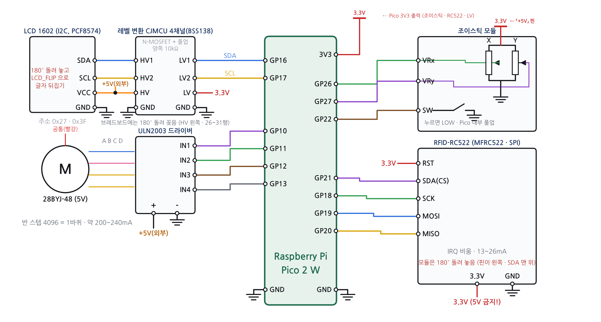

배선 연습 — 앞면 회로도를 보고 점퍼선을 색연필로 그려 넣으세요. 선이 지나가는 구멍(행 · 열)을 정확히 짚어 그립니다.


6A 70 F4 BC → 「ASCII: jp..」 (못 찍는 값은 .)code.py · lcd_i2c.py · mfrc522_lite.pylib 폴더는 그대로 두세요.test1 → test4 를 code.py 로 바꿔 시험한 뒤 통합 code.py.run_assess_ui.bat 더블클릭 → 점검 칸 8개가 모두 ✔ 이면 완성.